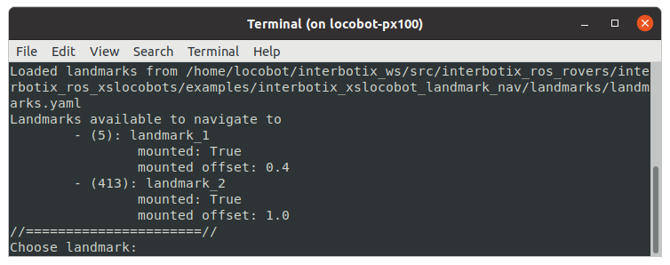

Landmark-Based Navigation
 View Package on GitHub
View Package on GitHub
Overview
This package builds on top of the interbotix_xslocobot_nav, interbotix_landmark_modules, and interbotix_perception_modules packages to provide a method to traverse the map towards points of interest (landmarks) marked by AprilTags. You are provided a set of AprilTag including the ones below with their corresponding descriptions:
| Tag Image | Tag ID | Description |
|---|---|---|
| 5 | Face w/ Two Eyes | |
| 413 | Up Arrow | |
| 820 | Face w/ One Eye | |
| 875 | U | |
| 1050 | Face w/ No Eyes |
Note
The orientation of the tag is important. The tag coordinate system is defined as follows:
- The origin is at the center of the tag
- The x-axis points to the right
- The y-axis points down
- The z-axis points out of the tag
This coordinate system affects how the LoCoBot will navigate to the landmarks. When placed on the floor, the robot will navigate to the tag such that it is in-line with the tag's x-axis. When mounted, the robot will turn to face the tag's x-axis (if it can). As such, the AprilTags should be mounted in the orientation shown above for consistency with the landmark application stack.
Structure
As mentioned before, this package builds on the interbotix_landmark_modules package. A short description of the nodes needed from that package can be found below:
- tf_map_to_landmark - very small node that publishes an identity transform between the map frame and the landmark frame, separating the landmarks from the rest of the tf tree
- landmark_finder - uses the AprilTag single image detector service to search for tags and publish their location in the map during mapping
- landmark_manager - tool to create landmarks from the set of valid AprilTags
Other packages required for landmark_nav include move_base and interbotix_perception_modules:
- move_base - performs path planning to the selected landmark goal and will attempt to reach said goal by sending velocity commands to the base
- static_transform_pub - publishes any transform it receives to the static transform tree; used to build a tf tree that describes landmark poses relative to the map
A more in-depth description of the nodes used by the interbotix_xslocobot_nav package can be found in its Structure section.
Usage
There are three steps to using this package. First, landmarks must be created using the landmark_manager tool. Next, the robot maps out the area using SLAM techniques and locates the landmark tags in the map. Finally, the robot navigates to a selected landmark.
Adding Landmarks
To start using this package, you must first create a set of landmarks. You can either edit the landmarks.yaml configuration file, or you can use the landmark_manager tool. To access this tool, run the following command on the robot computer:
$ roslaunch interbotix_xslocobot_landmark_nav landmark_manager.launch
The tool presents a command line application to manage landmarks. From the set of valid tag ids,
you can choose any of them to label and set a mounted_offset and rotation_offset. The
mounted_offset is the distance away from the wall that the robot should navigate to if a tag is
mounted to it. The rotation_offset is the angle (in radians) that the robot should turn
counter-clockwise relative to facing the tag (if mounted), or relative to the tag's x-axis (if on
the floor).
Note
Tags with an assigned landmark are in parentheses. Launch options for the landmark_manager tool in the landmark modules package README.
Mapping
Once a valid set of landmarks is created, you can now map out the robot's environment. To start the SLAM process from a fresh map, type the following in a terminal on the robot computer:
$ roslaunch interbotix_xslocobot_landmark_nav xslocobot_landmark_nav.launch robot_model:=locobot_px100 mapping:=true rtabmap_args:=-d
To save the location of the landmark, the robot must 'see' its tag. To ensure that the tag is in view, check the terminal for a line like:
[INFO] Static Transform Publisher received TF from "landmarks" to "landmark_2"
This line means that the landmark_finder node saw the landmark, calculated its pose relative to the map frame, and published it to the static_transform_pub where it was added to the static tf tree.
Once all landmarks have been found, you can shut down ROS using Ctrl + C. The landmarks and their positions in the map will be saved.
A more in-depth review of the general mapping process can be found in the interbotix_xslocobot_nav package's SLAM From Scratch section.
Localization
Now that all the tags have been located and the map has been explored, you are now ready to navigate to any landmark. To start the localization process, type the following in a terminal on the robot computer:
$ roslaunch interbotix_xslocobot_landmark_nav xslocobot_landmark_nav.launch robot_model:=locobot_px100 localization:=true
This will launch the navigation stack, as well as a command line application in a new terminal. This application simply displays the active landmarks and asks you to choose the ID of the one you would like to navigate to.
Once selected, the application will send a pose goal to the move_base node where it will then drive the robot to the location.